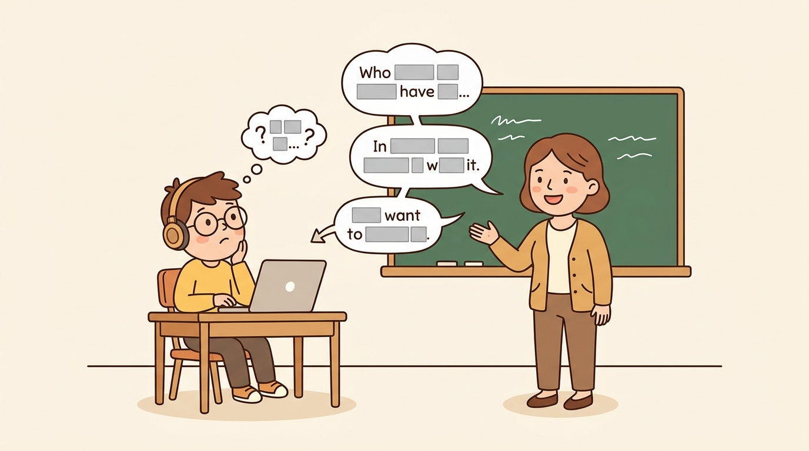

"BERT for speech is just BERT, but the targets you mask and predict have to be invented from the audio itself. The history of audio SSL is the history of better ways to invent those targets."
Echo, Pitch-Perfect AI Agent
Modern speech recognition and audio classification rely on pretrained encoders that have learned acoustic structure from hundreds of thousands of hours of unlabeled audio. The four canonical encoders, all available on HuggingFace, are wav2vec 2.0 (contrastive learning over Gumbel-quantized targets), HuBERT (masked prediction of k-means cluster IDs that get refined across iterations), WavLM (HuBERT plus utterance-mixing data augmentation), and BEATs (a self-distilled tokenizer that generalizes beyond speech to general audio). All four ingest raw waveforms (16 kHz, normalized to zero mean and unit variance), use a small convolutional feature encoder to produce a 50 Hz frame embedding, and pass that through a BERT-style transformer encoder. They differ only in what they ask the transformer to learn. This section dissects each in turn and ends with a cheat-sheet table that picks the right encoder for the reader's downstream task.
Prerequisites
This section assumes the reader has finished Section 20.0.1 (waveforms and spectrograms) and Section 20.0.3 (audio transformer roles). Familiarity with the BERT masked-language-modeling objective from Chapter 3 and contrastive learning intuition from the CLIP discussion in Chapter 22 is recommended.

Every SSL encoder in this section (wav2vec 2.0, HuBERT, WavLM, BEATs) was pretrained on 16 kHz audio and expects 16 kHz at inference. Feed 44.1 kHz or 48 kHz audio directly and the model will not error; it will silently encode a sped-up version of the signal, producing embeddings that look reasonable but encode the wrong acoustic content. The HuBERT and wav2vec 2.0 processors print a one-line warning if the sampling rate disagrees, but they do not refuse to run. Always resample upfront with librosa.load(path, sr=16_000) or ds.cast_column("audio", Audio(sampling_rate=16_000)) before any SSL encoder call. BEATs is the only one in the list that consumes log-mel patches rather than raw waveform; for BEATs the same resample applies to the audio that feeds the spectrogram extractor.
20.0.4.1 The Two Self-Supervised Learning Families
Self-supervised learning (SSL) on audio splits into two families that differ on what kind of target the model learns to predict.
Contrastive SSL defines a target as this audio frame's true latent and trains the model to distinguish it from a set of distractor latents drawn from other frames. The InfoNCE loss treats the problem as a $|Q|$-way classification task: out of one true target plus $|Q| - 1$ distractors, identify the true one. wav2vec 2.0 lives in this family.
Masked-prediction SSL assigns each audio frame a discrete pseudo-label (a cluster ID), masks a subset of the frames, and trains the model to predict the cluster IDs of the masked frames from the unmasked context, using standard cross-entropy. The pseudo-label vocabulary is the hard part: it has to capture phonetic structure without being given any. HuBERT (and its descendants WavLM, BEATs) live in this family.
Both families inherit the BERT recipe (mask a span, predict the masked content), but they differ on whether the prediction target is a continuous latent contrasted against distractors (wav2vec 2.0) or a discrete cluster ID compared with cross-entropy (HuBERT). The empirical winner depends on the downstream benchmark. HuBERT and WavLM dominate the SUPERB benchmark (Yang et al., 2021), a broad evaluation across ten speech tasks. wav2vec 2.0 is simpler to implement and converges faster.
20.0.4.2 wav2vec 2.0: Contrastive Pretraining
Baevski et al.'s wav2vec 2.0 (Baevski et al., 2020) was the breakthrough audio SSL model that beat hybrid HMM-DNN systems on LibriSpeech with only an hour of labeled data after pretraining on 53,000 hours of unlabeled audio. The architecture has three components.
The CNN Feature Encoder
A stack of seven 1D convolutional blocks downsamples the raw 16 kHz waveform by 320x to produce a 512-dimensional latent vector $z_t$ per 25 ms frame at 50 Hz. Each block uses kernel sizes (10, 3, 3, 3, 3, 2, 2) with matching strides, group normalization on the first block, and GELU activations throughout.
The Transformer Context Network
The latent sequence $z = (z_1, z_2, \ldots, z_T)$ goes through a transformer encoder (12 layers, 768 hidden dim for wav2vec2-base; 24 layers, 1024 hidden dim for wav2vec2-large) to produce contextual embeddings $c_t$. Before entering the transformer, a fraction $p$ of time steps (default $p = 0.065$ as starting indices, with each span extending 10 frames) are selected and replaced with a single trained mask vector, exactly as BERT masks input tokens. Positional information uses a convolutional positional encoding (a depthwise conv applied to the input, added residually) rather than sinusoidal or learned position embeddings.
The Quantization Module
In parallel, the unmasked $z_t$ goes through a Gumbel-Softmax quantizer to produce a discrete target $q_t$. The quantizer uses product quantization with $G = 2$ groups and $K = 320$ codewords per group, exposing $K^G = 320^2 = 102{,}400$ effective codewords from $2 \times 320 = 640$ trainable codeword vectors. Concretely, the quantizer multiplies $z_t$ by a trainable projection matrix $W_q \in \mathbb{R}^{d \times K}$ to get logits $\ell_t \in \mathbb{R}^K$ per group, samples a near-one-hot Gumbel-Softmax selection vector at temperature $\tau$ (annealed from 2.0 down to 0.5 during training), and looks up the corresponding codebook entries. The two group outputs are concatenated and passed through a final projection to give the target $q_t$. The Gumbel-Softmax (Section 20.0.2.4) is what makes the codebook trainable end-to-end.
The Contrastive Loss
Figure 20.0.4.2 shows the full forward pass as a wiring diagram: the CNN encoder produces the latent stream $z$, the masked branch sends it through the transformer to make $c_t$, the parallel quantizer branch produces the discrete target $q_t$, and the InfoNCE loss compares the two. Concretely, for each masked time step $t$, the model takes the transformer output $c_t$ and computes its similarity to the true target $q_t$ as well as to a set of $|Q| - 1$ distractor targets sampled from other masked time steps in the same utterance. The InfoNCE loss is:
where $\mathrm{sim}(a, b) = a^\top b / (\lVert a \rVert \cdot \lVert b \rVert)$ is the cosine similarity, $\kappa$ is a temperature hyperparameter (typically 0.1), and $Q_t$ is the set of $|Q|$ candidate vectors (the true $q_t$ plus 100 distractors sampled uniformly from other masked positions). A small diversity loss is added to encourage uniform codebook usage and prevent collapse. The contrastive objective forces $c_t$ to be more similar to its true target $q_t$ than to distractors; because distractors come from other speech frames, the model learns to discriminate fine-grained phonetic content.
Fine-Tuning for ASR
For ASR, the quantizer is dropped, a linear character classifier is added on top of the transformer, and the model is fine-tuned with CTC loss (Section 20.0.3.6) on labeled speech. The famous result from the original paper: pretrain on 53,000 hours of unlabeled LibriVox audio, then fine-tune on just 10 minutes of labeled LibriSpeech, and achieve 4.8% WER on LibriSpeech test-clean, comparable to supervised systems trained on 100x more labeled data.
Consider a single 10-second utterance pretrained with wav2vec2-base. The CNN encoder turns 160,000 samples (16 kHz) into a latent stream of $T = 500$ frames at 50 Hz, each of dimension 512. The masker selects starting indices with probability $p = 0.065$ and extends each mask to 10 frames, which on average masks $500 \times 0.065 \times 10 \approx 325$ frames (counting overlap). For one specific masked position $t = 217$, the transformer outputs a context vector $c_{217} \in \mathbb{R}^{768}$ and the Gumbel-Softmax quantizer produces the true target $q_{217} \in \mathbb{R}^{256}$ (two groups of 128 dims concatenated). The InfoNCE loss draws $|Q| - 1 = 100$ distractor targets uniformly from other masked positions in the same utterance. Suppose cosine similarities at temperature $\kappa = 0.1$ produce a logit of $0.62 / 0.1 = 6.2$ for the true target and an average logit of $0.05 / 0.1 = 0.5$ for the 100 distractors. The softmax normalizer is $\exp(6.2) + 100 \cdot \exp(0.5) \approx 493 + 165 = 658$, so $P(q_{217} \mid c_{217}) = 493 / 658 \approx 0.749$ and $\mathcal{L}_m = -\log 0.749 \approx 0.289$. Aggregated over all 325 masked frames in this clip, the contrastive loss contributes roughly $325 \times 0.289 \approx 94$ nats per utterance, with the diversity loss adding another small term that rewards uniform codebook usage. Early in training, distractor logits are closer to the true logit and per-frame loss climbs above 2.0; by the end of pretraining most frames sit below 0.3 like the example above.
import torch, librosa
from transformers import Wav2Vec2Model, Wav2Vec2FeatureExtractor
# Bare backbone (no CTC head): outputs frame-level contextual embeddings c_t.
extractor = Wav2Vec2FeatureExtractor.from_pretrained("facebook/wav2vec2-base")
model = Wav2Vec2Model.from_pretrained("facebook/wav2vec2-base").eval()
waveform, sr = librosa.load("clip.wav", sr=16_000, mono=True)
inputs = extractor(waveform, sampling_rate=16_000, return_tensors="pt")
with torch.no_grad():
outputs = model(**inputs)
# outputs.last_hidden_state: (1, n_frames, 768) - the c_t from Figure 20.0.4.2.
# n_frames = ceil(n_samples / 320), the 50 Hz output rate of the CNN feature encoder.
print(outputs.last_hidden_state.shape)
# Example: torch.Size([1, 149, 768]) for a ~3 second clip
# (3.0 s * 16,000 samples/s / 320 samples/frame ≈ 150 frames)last_hidden_state is exactly the sequence of contextual embeddings $c_t$ from Figure 20.0.4.2, one per 20 ms frame. Swap Wav2Vec2Model for Wav2Vec2ForCTC and the same call returns ASR logits instead (see Code Fragment 20.0.3.2); swap for Wav2Vec2ForPreTraining and the model also returns the Gumbel-quantized targets $q_t$ and a contrastive loss for continued pretraining.20.0.4.3 HuBERT: Masked Cluster Prediction
Hsu et al.'s HuBERT (Hsu et al., 2021) replaces the wav2vec 2.0 contrastive objective with a BERT-style cross-entropy on cluster IDs. The acronym stands for "Hidden Unit BERT": the audio is clustered into a set of discrete "hidden units" (phoneme-like pseudo-labels) and the transformer is trained to predict the unit IDs of masked frames. The model and the targets are trained jointly across iterations.
HuBERT Architecture
The CNN feature encoder is identical to wav2vec 2.0's (320x downsample to 50 Hz, 512-dim per frame). The transformer is also a standard BERT-style stack. The key difference is what the transformer is asked to predict.
Iterative Tokenization
The challenge HuBERT solves is "where do the cluster IDs come from?" Acoustic frames have no pre-existing phoneme labels (otherwise the model would not need SSL). HuBERT's answer is to bootstrap the clustering iteratively:
- Iteration 1. Compute MFCC features for every 25 ms window of the unlabeled training audio. Run $k$-means with $K = 100$ clusters on a random subset (a few hundred thousand frames). Assign every frame to its nearest cluster; the cluster IDs become the pseudo-labels.
- Iteration 1 training. Train the HuBERT transformer with masked prediction of these MFCC-derived cluster IDs. Mask 50% of the input frames (each masked span is up to 10 frames; the starting indices are sampled randomly), feed the masked sequence through the transformer, and predict the cluster ID at each masked position with cross-entropy.
- Iteration 2. Extract intermediate transformer layer features (typically the 6th layer of the iteration-1 model) for the same training audio. Re-cluster with $k$-means at a larger $K = 500$. The new cluster IDs are derived from contextual transformer features and so are much more phonetically meaningful than raw MFCCs.
- Iteration 2 training. Train a fresh HuBERT transformer with masked prediction of the iteration-2 cluster IDs.
- Iteration 3 (optional). Repeat once more with $K = 1000$ for the largest model variants.
Each iteration takes hundreds of GPU-days and the published HuBERT models stop at iteration 2 or 3. The intuition is that the transformer learns better representations than MFCCs, which yield better cluster IDs, which yield a better transformer in the next round.
facebook/hubert-base-ls960 stops at iteration 2; the larger variants run a third iteration with $K = 1000$.Cluster Prediction Head
At training time the model needs to predict a cluster ID at each masked position. Rather than a flat linear classifier, HuBERT projects the masked transformer output into a low-dimensional space and compares it (via cosine similarity) to projected cluster centers. The cluster centers $\mu_k$ from $k$-means are themselves linearly projected to the same low-dimensional space through a small trainable matrix $A \in \mathbb{R}^{d \times d_c}$:
where $o_t$ is the transformer output at masked position $t$ and $\tau$ is a learned temperature. The cross-entropy loss over the true cluster ID supplies the gradient. Both the transformer and the projection $A$ are trained; the cluster centers $\mu_k$ themselves are frozen between iterations.
Fine-Tuning for ASR
Fine-tuning replaces the cluster-prediction head with a linear character head and trains with CTC loss on labeled speech, exactly as wav2vec 2.0 does. Published checkpoints include facebook/hubert-base-ls960 (95M params, base configuration trained on 960 hours of LibriSpeech), facebook/hubert-large-ls960-ft (300M params, fine-tuned for ASR), and the larger facebook/hubert-xlarge variants.
import torch, librosa
from transformers import Wav2Vec2Processor, HubertForCTC
# Fine-tuned HuBERT-Large with a CTC head trained on LibriSpeech 960h.
processor = Wav2Vec2Processor.from_pretrained("facebook/hubert-large-ls960-ft")
model = HubertForCTC.from_pretrained("facebook/hubert-large-ls960-ft").eval()
waveform, sr = librosa.load("clip.wav", sr=16_000, mono=True)
inputs = processor(waveform, sampling_rate=16_000, return_tensors="pt")
with torch.no_grad():
logits = model(**inputs).logits # (1, n_frames, vocab_size)
# Greedy CTC: argmax per frame, then collapse repeats + remove blanks.
pred_ids = torch.argmax(logits, dim=-1)
transcript = processor.batch_decode(pred_ids)[0]
print(transcript)
# "THE QUICK BROWN FOX JUMPS OVER THE LAZY DOG"HubertModel replaces HubertForCTC; the only structural difference between the two is the final linear character head. Reader who wants stronger long-form decoding should pipe logits through pyctcdecode with a KenLM n-gram language model rather than relying on greedy argmax.Trace the iteration-1 to iteration-2 transition on a 10-hour subset of LibriSpeech. Iteration 1 starts from 39-dim MFCC features over 25 ms windows, clusters into $K = 100$ k-means centers, and trains the transformer with cross-entropy on the resulting cluster IDs. After 250k training steps, the model's layer-6 hidden states are 768-dim contextual vectors that already separate phoneme-like content much better than MFCCs do; running k-means with $K = 500$ on these vectors typically gives a cluster purity (fraction of frames in each cluster sharing the same forced-aligned phoneme label) of around 0.78, versus roughly 0.42 for the MFCC clusters. Suppose for one frame at $t = 312$ the transformer output $o_{312}$ has cosine similarity 0.91 to its true cluster center $\mu_{47}$ and around 0.35 to the next-best center; with the projection $A$ and learned temperature $\tau = 0.1$, the softmax over $K = 500$ centers gives $P(k=47 \mid t=312) \approx 0.94$, so the per-frame cross-entropy is $-\log 0.94 \approx 0.062$ nats. Across the masked half of a typical 10-second utterance (about 250 masked frames), the total loss is roughly 15 to 25 nats, dropping by another 30% when iteration 3 with $K = 1000$ refines the clusters once more.
The single pedagogical contrast between wav2vec 2.0 and HuBERT is the loss function. wav2vec 2.0 asks "out of 100 candidate target vectors, identify the true one"; the loss is contrastive (InfoNCE). HuBERT asks "out of $K$ cluster IDs, predict the true one"; the loss is cross-entropy. Both work; both are forms of self-supervision on masked frames. The cross-entropy approach turns out to scale slightly better and is consistently a few WER points better on SUPERB benchmarks, which is why HuBERT, WavLM, and BEATs all adopted it. The contrastive recipe is conceptually closer to vision SSL (SimCLR, MoCo) and is easier to reason about for engineers coming from those models.
20.0.4.4 WavLM: HuBERT Plus Utterance Mixing
Chen et al.'s WavLM (Chen et al., 2022a) is HuBERT with one critical augmentation. The motivation: HuBERT and wav2vec 2.0 dominate clean single-speaker ASR but degrade on conversational, noisy, and multi-speaker audio (think podcasts, meetings, mobile-phone recordings). WavLM addresses this by augmenting training with utterance mixing.
The trick is conceptually simple. During pretraining, with some probability mix two random training utterances together at the waveform level (overlay them with a random gain), but only require the model to predict the cluster IDs of the first utterance's frames. The model is forced to learn to separate overlapping speakers and noise sources because the prediction target ignores the interference. WavLM also adds noise augmentation (overlaying ambient noise from MUSAN at SNR 5-20 dB) and gain augmentation. The cluster targets come from the same HuBERT-style iterative $k$-means pipeline.
The result is that WavLM matches HuBERT on clean ASR but substantially outperforms it on speaker verification, speaker diarization, speech separation, and any other task involving overlapping speakers or background noise. It topped the SUPERB benchmark when released and remains the default choice when downstream conditions are noisy. Published checkpoints include microsoft/wavlm-base (95M params) and microsoft/wavlm-large (316M params).
WavLM is also the encoder used by Mimi (Section 20.0.2.5) as a distillation target for its first RVQ codebook, which is how Moshi gets a semantically meaningful first stream out of its audio codec.
Suppose two LibriSpeech utterances are sampled together for one training step: utterance $A$ is "the quick brown fox" (3 seconds, 48,000 samples at 16 kHz) and utterance $B$ is "she sells seashells" (3 seconds, 48,000 samples). The WavLM data loader concatenates them along the time axis (or overlays them at a randomly chosen start offset, here say sample 16,000 = 1.0 second into $A$), and applies a random gain ratio drawn uniformly in [0.5, 2.0]; suppose $B$ is attenuated by 0.7. The mixed waveform $x_{\mathrm{mix}}$ is then
and equal to $x_A[t]$ elsewhere. The CNN feature encoder downsamples this 48,000-sample mixed waveform by 320x to a $48{,}000 / 320 = 150$ frame latent sequence at 50 Hz. The transformer masks 50% of these frames and the masked-prediction loss is computed against the cluster IDs derived from the clean $x_A$ only: even though frames 50-149 contain audible interference from $x_B$, the model is asked to predict the phonetic content of $x_A$ at those positions. Over a few hundred thousand training steps this forces the transformer to learn implicit source separation. A HuBERT baseline trained without this augmentation achieves an EER (equal error rate) of about 6.0% on VoxCeleb speaker verification; WavLM-base with utterance mixing reaches 1.4% EER on the same benchmark, a 4x reduction driven entirely by this augmentation trick.
Below we combine HuggingFace's WavLM checkpoint with librosa, used here purely to load and resample the input .wav to 16 kHz mono before handing it to the WavLM feature extractor.
import torch
import librosa
from transformers import AutoFeatureExtractor, WavLMModel
# microsoft/wavlm-base-plus is the standard noise-robust checkpoint;
# upgrade to "microsoft/wavlm-large" for 316M params and better diarization.
feat = AutoFeatureExtractor.from_pretrained("microsoft/wavlm-base-plus")
model = WavLMModel.from_pretrained("microsoft/wavlm-base-plus").eval()
waveform, sr = librosa.load("noisy_meeting.wav", sr=16_000, mono=True)
inputs = feat(waveform, sampling_rate=16_000, return_tensors="pt")
with torch.no_grad():
out = model(**inputs, output_hidden_states=True)
# out.last_hidden_state: (1, n_frames, 768) at 50 Hz
frame_emb = out.last_hidden_state.squeeze(0)
clip_emb = frame_emb.mean(dim=0) # (768,) for speaker / clip-level tasks
print(frame_emb.shape, clip_emb.shape)
HubertModel, WavLMModel ships the noise-robust weights that result from the utterance-mixing pretraining in Figure 20.0.4.4, so the frame embeddings remain stable even when the input contains overlapping speech. The same (B, T, 768) tensor feeds a speaker-verification head (mean-pool + cosine), a diarization clustering pipeline (frame-level x-vectors), or any downstream linear probe.20.0.4.5 BEATs: Self-Distilled Tokenizer for General Audio
Chen et al.'s BEATs (Chen et al., 2022b/2023, "Bidirectional Encoder representation from Audio Transformers") generalizes the HuBERT recipe beyond speech to general audio (sound events, music, environmental sounds). The HuBERT clustering step works because phonemes are a useful inductive bias for speech, but for general audio there is no analogue: a "sound event" cluster is much less well-defined than a phoneme. BEATs solves this with a self-distilled discrete tokenizer trained alongside the main encoder.
The architecture has two components. The first is an acoustic tokenizer: a small transformer that takes mel-spectrogram patches as input and outputs discrete token IDs via a Gumbel-Softmax codebook. The second is the main audio transformer encoder with the same patch input format. The training cycle alternates between two phases:
- Tokenizer phase. Train the tokenizer to predict pseudo-labels derived from the main encoder's outputs (self-distillation). Specifically, the main encoder's intermediate features are clustered (or the encoder itself acts as a teacher whose predictions become tokenizer targets), and the tokenizer is trained with cross-entropy to match these targets.
- Encoder phase. Freeze the tokenizer and use its outputs as cluster IDs to train the main encoder with BERT-style masked prediction (50% mask rate, cross-entropy loss on tokenizer IDs).
The two phases alternate every few epochs, with each producing better targets for the other. The result is a general-audio encoder that achieves state-of-the-art on AudioSet (the 527-class audio event benchmark) and ESC-50, while also performing well on speech tasks. Published checkpoints live under microsoft/beats with sizes from BEATs_iter3 (90M, after 3 self-distillation iterations) up to BEATs_iter3_plus_AS2M (the same model fine-tuned on AudioSet).
BEATs is the encoder to reach for when the downstream task involves non-speech audio (environmental sounds, music) and a HuBERT-family encoder underperforms because speech-specific clustering does not transfer.
20.0.4.6 The Cheat-Sheet
| Encoder | Input | Target type | Loss | Training stages | Best for |
|---|---|---|---|---|---|
| wav2vec 2.0 | raw 16 kHz waveform → CNN feature encoder, 50 Hz | Gumbel-quantized continuous codeword | InfoNCE contrastive | 1 (single pretraining pass) | English ASR, when convergence speed matters |
| HuBERT | raw 16 kHz waveform → CNN feature encoder, 50 Hz | k-means cluster ID (refined iteratively) | cross-entropy on cluster ID | 2-3 (iter 1 from MFCC clusters, iter 2+ from transformer features) | Multilingual ASR, frame-level representations, downstream classification |
| WavLM | raw 16 kHz waveform + utterance mixing + noise overlay | k-means cluster ID on clean utterance | cross-entropy on cluster ID | 2-3, plus mixing augmentation throughout | Noisy speech, conversational audio, speaker verification, diarization, separation |
| BEATs | log-mel patches (image-style) | self-distilled tokenizer ID | cross-entropy on tokenizer ID | 3+ (alternate tokenizer and encoder phases) | General audio: events, music, environmental sounds, AudioSet/ESC-50 |
20.0.4.7 Using Them: The Frozen-Encoder + Linear-Probe Pattern
The most common way to put one of these encoders to work is the linear probe: freeze the pretrained encoder, extract a single fixed-size embedding per audio clip by mean-pooling the frame-level outputs, and train a small classification head (often just a linear layer) on labeled task data. The pattern is identical for wav2vec 2.0, HuBERT, WavLM, and BEATs; only the model class and processor differ. The snippet below uses librosa for audio loading and resampling alongside transformers for the encoder.
import torch
import librosa
from transformers import Wav2Vec2Processor, HubertModel
processor = Wav2Vec2Processor.from_pretrained("facebook/hubert-base-ls960")
model = HubertModel.from_pretrained("facebook/hubert-base-ls960").eval()
def extract_embedding(file_path):
waveform, sr = librosa.load(file_path, sr=16_000, mono=True)
inputs = processor(waveform, sampling_rate=16_000, return_tensors="pt")
with torch.no_grad():
outputs = model(**inputs)
# outputs.last_hidden_state: (1, n_frames, hidden_dim=768)
# Mean-pool across the time axis to get a single clip embedding.
return outputs.last_hidden_state.mean(dim=1).squeeze(0) # (768,)
emb = extract_embedding("clip.wav")
print(emb.shape) # torch.Size([768])
# Now train any sklearn / torch classifier on top of these embeddings:
# from sklearn.linear_model import LogisticRegression
# clf = LogisticRegression(max_iter=1000).fit(train_embeddings, train_labels)Wav2Vec2Model.from_pretrained("facebook/wav2vec2-base"), WavLMModel.from_pretrained("microsoft/wavlm-base"), and the BEATs checkpoints. Note the distinction: HubertModel returns the bare encoder output (for feature extraction); HubertForCTC returns the character logits for ASR (a different downstream head). The same backbone serves both via different head classes. Reader who is fine-tuning end-to-end rather than linear-probing should call model.train() and either drop the torch.no_grad() block or use LoRA adapters on the transformer layers.20.0.4.8 Which Encoder Should the Reader Use?
A short decision tree, with rationale:
- English ASR on clean speech: any of the four works; wav2vec 2.0 base is the smallest and fastest.
- Multilingual ASR: wav2vec 2.0 XLS-R (Babu et al., 2022), an extension of wav2vec 2.0 trained on 128 languages, or HuBERT multilingual variants.
- Noisy or conversational speech, diarization, speaker verification: WavLM. The utterance-mixing augmentation pays for itself.
- General audio classification (events, music, environmental sounds): BEATs or AST. AST is older and simpler; BEATs is newer and slightly stronger on AudioSet.
- Linear-probe downstream classification: HuBERT or WavLM gives the most generally useful frame-level representations. The default in most HuggingFace audio tutorials is DistilHuBERT (Chang et al., 2022), a 6-layer distilled HuBERT that fine-tunes 2x faster with minimal accuracy loss.
- Speech-to-speech LLM (Moshi-style): WavLM (used as the distillation target for Mimi's first RVQ codebook in Section 20.0.2.5).
This section dissected how the four encoders are pretrained. The next section, Section 20.0.5, applies them to the audio classification flavors from Section 20.0 (events, intent, KWS, language ID) and walks through both the zero-shot path (via CLAP) and the supervised fine-tune path (DistilHuBERT plus the GTZAN music genre dataset). Reader interested in the codec-as-tokenizer view of SSL encoders should also revisit Section 20.0.2: EnCodec and Mimi are themselves a form of SSL encoder, just optimized for reconstruction rather than discrimination, and Mimi's codebook 1 is distilled from a WavLM encoder.
After my first HuBERT pretraining run I tried to "read" the cluster IDs as if they were phonemes. Cluster 42, I decided, was definitely a vowel. Cluster 91 was clearly an /s/. Three hours of staring at colored cluster plots later, a colleague gently pointed out that the model does not need cluster IDs to mean anything to a human; it only needs them to be consistent enough that masked prediction has gradient. The IDs are a private language between the encoder and itself. I have not tried to decode them since. An AI Model Who Mistook HuBERT for an IPA Chart
Self-supervised audio encoders learn from raw unlabeled audio by masking part of the input and predicting it from the rest. Two recipes dominate: contrastive (wav2vec 2.0, InfoNCE over Gumbel-quantized targets) and masked cluster prediction (HuBERT, cross-entropy on iteratively-refined $k$-means cluster IDs). WavLM extends HuBERT with utterance-mixing augmentation for noisy and conversational audio; BEATs replaces the $k$-means clustering with a self-distilled tokenizer to handle general non-speech audio. The frozen-encoder + linear-probe pattern is the cheapest way to put any of them to work on a new downstream task.
Objective. Use a self-supervised audio encoder as a feature extractor and confirm the embeddings carry speaker identity.
Task. Load Wav2Vec2Model.from_pretrained("facebook/wav2vec2-base") with its processor. Pick 5 clips each from 3 different speakers in LibriSpeech (or any small speaker-labeled set). For each clip, extract the last hidden state, mean-pool across time, and L2-normalize to get one embedding per clip. Build the 15x15 cosine-similarity matrix and visualize it as a heatmap. The 3x3 block-diagonal structure should be visible: within-speaker similarity higher than across-speaker.
Stretch. Repeat with HuBERT and WavLM. Which encoder gives the cleanest block structure for speaker identity? Tie the answer back to each model's pretraining objective.
What Comes Next
Section 20.0.5 closes the foundational sub-section block with the audio classification recipe. Reader will see how to use the AST checkpoint (built on AudioSet) for events, how the wav2vec 2.0 and Whisper backbones serve intent and language ID, how CLAP enables zero-shot classification of arbitrary text labels, and finally how to fine-tune DistilHuBERT on GTZAN for music genre classification using the HuggingFace Trainer. After that, the chapter returns to the original Section 20.1 on TTS.